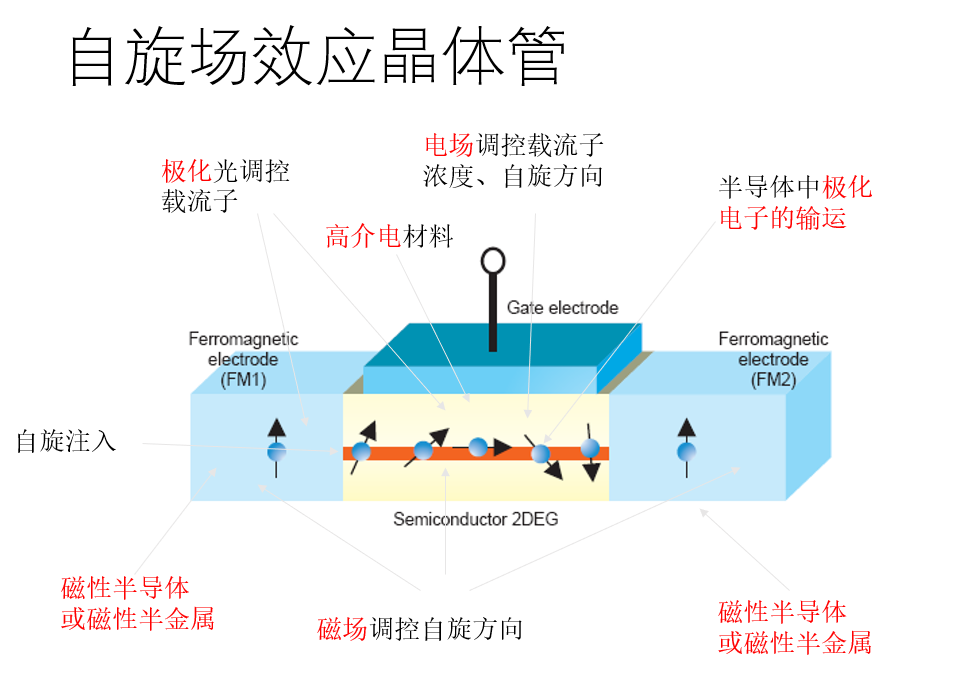

微电子学的新发展
- 生物探测芯片
- 神经网络计算（人工智能）
- 忆阻器
- 超高频电路
- 石墨烯
- 超低功耗逻辑/存储
- 量子隧穿晶体管
- 自旋电子学晶体管
- 量子计算
- 自旋电子学晶体管
- 智能穿戴
- 柔性电子学
- 拓扑绝缘体
忆阻器
用数学模型和算法来描述和模仿神经元的行为和相互关系，但计算仍然运行在传统的计算机上——冯诺依曼架构
用电子器件模拟生物神经元的功能，构建新的神经计算机——非冯诺依曼架构
传递信息-处理信息-存储信息
𝑉(𝑡)=𝑀(𝑞(𝑡))𝐼(𝑡)
功能如同电阻，但在关掉电源后，仍能“记忆”先前通过的电荷量。忆阻器的电阻值取决于多少电荷经过了这个器件。也就是说，让电荷以一个方向流过，电阻会增加；如果让电荷以相反的方向流过，电阻就会减小。
- 工作原理
- 一块极薄的二氧化钛被夹在两个电极中间，这些二氧化钛又被分成两个部份，一半是正常的二氧化钛，另一半进行了“掺杂”，少了几个氧原子。因此“掺杂”的那一半带正电，电流通过时电阻比较小，而且当电流从“掺杂”的一边通向正常的一边时，在电场的影响之下缺氧的“掺杂物”会逐渐往正常的一侧游移，使得以整块材料来言，“掺杂”的部份会占比较高的比重，整体的电阻也就会降低。反之，当电流从正常的一侧流向“掺杂”的一侧时，电场会把缺氧的“掺杂物”从回推，电阻就会跟着增加。因此，整个器件就相当于一个滑动变阻器一样。
- 特点
- 忆阻器输入输出关系是非线性的。
- 忆阻器的输入和输出都是连续的, 因而其存储的精度理论上是无限的。
- 由于忆阻器是基本无源电路元器件，可以方便的将其应用在电路中，形成混合型电路。
- 由于在电荷流经的时候，忆阻器的内部结构产生变化并能在新的状态下长时间保持。因而具有非易失性的特点。
- 以上特点都使得忆阻器具备了传统存储器材无可比拟的优势，它的高集成密度、高读写速度、低功耗、多值计算使得它成为下一代存储元件的理想选择。
- 发展前景
- 在目前的工艺水平下，基于忆阻器的内存芯片存储密度要比目前基于晶体管的芯片高出至少一个数量级。此外，该存储芯片的运行速度也非常快，将信息存储在忆阻器内存上的速度比存储在快闪内存上的速度高出 3 个数量级
- 非易失性——目前广泛使用的 DRAM 上存储的内容会随着时间而丢失，因此必须不断地刷新，在存储器数量庞大的时候会消耗巨大的能量。而忆阻器内存因内部构造的原因，一旦写入可以长期保存，不需要被反复刷新。
- 存算一体
石墨烯
石墨烯（Graphene）是一种由碳原子构成的单层片状结构的新材料。由碳原子以sp2杂化轨道组成六角型呈蜂巢晶格的平面薄膜，只有一个碳原子厚度的二维材料。
是构建碳纳米管和富勒烯的基本单元
性能：
- 极薄极轻，厚度为0.34nm，比表面积为2630m2/g
- 导热率为3000-5000W/mK，与碳纳米管相当
- 极强的力学性能：拉伸模量1.01TPa，极限强度116GPa
- 优良的导电性，室温下载流子迁移率是硅的100倍
制备方式：
- 物理方法
- 机械剥离法
- 液相或气相直接剥离法
- 化学方法
- 表面析出生长法
- 氧化石墨还原法
- 化学气相沉积(CVD)法
- 化学合成法
应用前景
- 低成本石墨烯电池
- 可折叠弯曲屏
- 石墨烯传感器：高导电性、高强度、超轻薄
- 石墨烯过滤器
- 石墨烯生物器件：可修改化学功能、大接触面积、原子尺寸厚度、分子闸极结构等等特色
- 石墨烯感光元件
- 太阳能电池
- 柔性微处理器
从石墨烯到二维材料：
- 结构有序
- 二维平面生长
- 在第三维度超薄
自旋场效应晶体管
在半导体材料中有电子和空穴两种载流子 极化电子有自旋向上和向下的两种载流子
当电子通过铁磁金属时，电子由简并态，变成向上(+1/2)和向下(-1/2)的非简并态，表现出自旋极化
柔性电子学
材料：
- 碳纳米管
- 金属氧化物半导体薄膜
- 金属纳米薄膜、金属纳米线
- 有机高分子薄膜
- 水凝胶离子导体
- 液态金属
制造方法：
- 转移印刷
- 喷墨印刷
- 纤维结构形成
通常具有高导电性和透明性的材料是不可拉伸的。然而，通过几何结构设计，可以使坚硬的材料实现结构上的可拉伸。